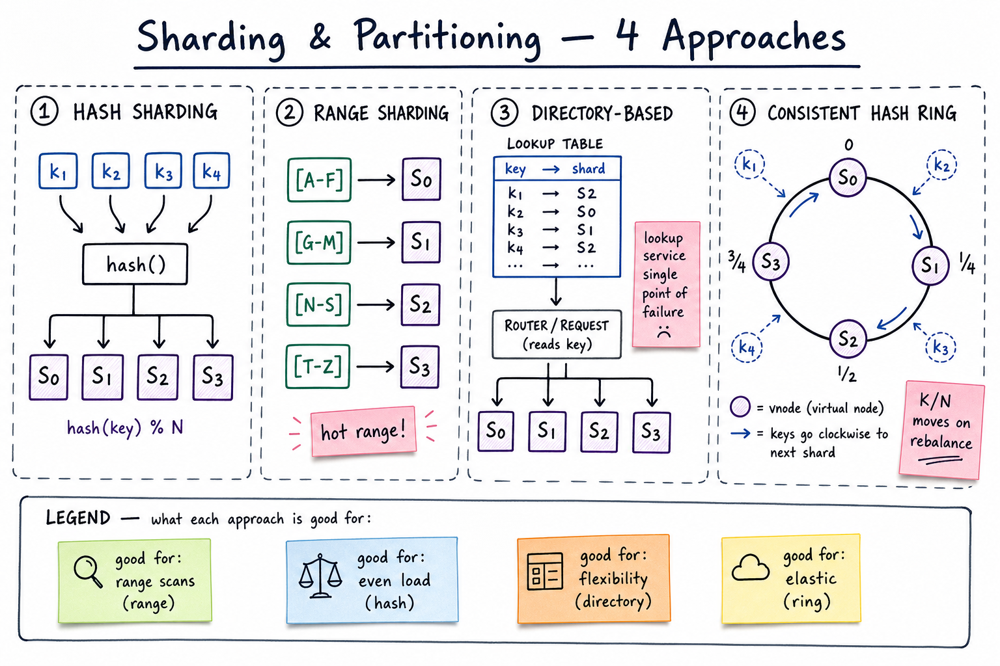

Sharding & Partitioning // Concept Primer
One DB can't hold all your data or absorb all your writes. Sharding splits the dataset across many machines using a partition key. Pick the wrong key and you get a hot shard; pick the wrong scheme and resharding becomes a re-architecture.

Side-by-side: hash sharding (keys flow through hash() into N shards), range sharding (lexical ranges with a hot-range risk), directory-based (lookup table maps key → shard), and consistent hash ring (vnodes, K/N movement on rebalance).
01 — What Problem It Solves
A single database hits a wall on at least one of these axes:
- Storage — 10TB+ of hot data doesn't fit on one machine cheaply.
- Write throughput — one leader handles ~10-50K writes/sec; you need 1M/sec.
- Read throughput — read replicas help but every replica still stores everything.
- Blast radius — one node down = entire service down.
Sharding splits rows across N independent databases by a partition key. Each shard owns a slice. Storage, write QPS, and blast radius scale with N.
Sharding vs Partitioning: in this sheet we treat them as synonyms. Strictly, "partitioning" can be physical (separate machines → sharding) or logical (one machine, multiple tables, e.g. Postgres declarative partitioning). The interview answer is almost always physical/horizontal sharding.
01a — Core Vocabulary
| Term | Definition | Notes |
|---|---|---|
| Shard | One physical partition of the dataset; usually its own DB instance. | aka "partition" in Kafka, "tablet" in Spanner, "region" in HBase. |
| Partition key | Field used to decide which shard a row lives on. | user_id, tenant_id, h3_cell, order_id. Choosing this is the single most important decision. |
| Shard key vs sort key | DynamoDB-style: shard key decides shard, sort key orders within shard. | Lets you do "all orders for user X in time range" on one shard. |
| Hot key | A single partition value with disproportionate traffic. | Celebrity user, popular product. Breaks "load divides by N". |
| Hot shard | One shard absorbing >>1/N of QPS or storage. | Caused by hot key OR bad key (monotonic id with hash that doesn't disperse). |
| Virtual shard / vnode | Logical partition; many vshards mapped to one physical machine. | Lets you rebalance by moving vshards, not re-hashing keys. 256-4096 typical. |
| Rebalancing / resharding | Moving data between shards as you add/remove nodes. | The operational nightmare. Design to minimise it. |
| Scatter-gather | Query fanned out to all shards, results merged. | Necessary when the query doesn't include the partition key. Expensive. |
| Co-located shards | Two tables sharded by the same key on the same shard. | Enables shard-local joins. Cornerstone of multi-table sharding. |
02 — Approaches
| Approach | How it works | Pros | Cons |
|---|---|---|---|
| Hash sharding | shard = hash(key) % N | Even distribution, simple. | Range scans require scatter-gather. Resharding remaps ~all keys. |
| Range sharding | Shard owns a contiguous range, e.g. [A-F], [G-M]. | Range queries are local. Splits adaptively (HBase, Spanner). | Hot range on monotonic writes (timestamps, autoinc ids). Skew if data not uniform. |
| Directory-based | Lookup service stores key → shard mapping. | Maximum flexibility; move any key without rehashing. | Lookup service is a SPOF + extra hop. Doesn't scale to billions of keys. |
| Consistent hashing | Hash ring + vnodes; key → clockwise vnode. | Adding/removing a node moves only K/N keys. Industry standard. | Still doesn't fix hot keys. Ring topology must be gossiped. |
| Geo-based | Shard by region/cell (country, h3 cell, latlon). | Locality, data sovereignty, low cross-region latency. | Region failure = local outage. Migrating a moving user (Uber driver) is non-trivial. |
| Hierarchical | Shard by tenant_id, then sub-shard within hot tenants. | Multi-tenant SaaS isolation, noisy-neighbor protection. | Two-level routing. Need a placement service. |
Default answer for interview: consistent hashing with vnodes on a chosen partition key. Justify with "minimal key movement on scale events".
04 — Picking a Partition Key
The key has to satisfy all of:
- High cardinality — millions of distinct values.
country_code(~200 values) is a terrible shard key. - Even distribution — no value > ~1% of traffic. Avoid status flags, type enums.
- Locality match — queries should usually filter by this key, so one shard answers them.
- Immutable — if it changes, the row must move shards. Avoid mutable fields.
Common picks
user_id → user-facing apps (Twitter, FB, Slack) tenant_id → B2B SaaS order_id (hashed) → e-commerce order tables account_id → banking, payments h3_cell / city_id → geo systems (Uber, Lyft) stream_id → live video, IoT device_id → mobile telemetry
Anti-pattern: sharding by created_at or autoincrement id → all writes hit the newest shard. Solution: hash it, or prefix with a hash bucket.
05 — Hot Keys
Even with a perfect shard key, a few values get celebrity traffic. Justin Bieber's tweets, Black Friday's iPhone listing, that one Live stream with 1M viewers.
Mitigation menu
| Technique | How | When |
|---|---|---|
| Sub-partitioning (salting) | Append a small random suffix to the key: user:42#0, user:42#1, ... Distribute writes across N sub-keys. Reads must gather all N. | Write-heavy hot keys (counters, leaderboards). |
| Read replicas for hot key | Replicate the hot row to many nodes; reads fan out. Writes still go to primary. | Read-heavy (celebrity profile, popular tweet). |
| Local caching | App-level LRU per server. Hot reads never reach the shard. | Read-heavy + tolerant of staleness. |
| Bounded-load consistent hashing | Cap per-shard load; spill to next vnode if full. Vimeo/Google. | Mostly-uniform with occasional spikes. |
| Dedicated shard | Pin the celebrity to their own machine with bigger CPU/RAM. | Known, stable hot keys (top 100 accounts). |
Detection: per-shard QPS + per-key sampling (top-K heavy hitters, Count-Min Sketch). Alert when one key > 1% of total.
06 — Resharding (Online vs Offline)
Why you need it
- Data grew — shard at 80% disk.
- Hot shard — need to split.
- Adding capacity — spreading load.
- Decommissioning hardware.
Offline reshard
1. Stop writes (maintenance window). 2. Dump → re-partition → reload into new shards. 3. Update routing config. 4. Resume.
Simple but unacceptable at scale (you can't take Twitter down for 8h).
Online (live) reshard
Virtual shards make resharding cheap: instead of rehashing keys, you move vshards. Foursquare's MongoDB resharding, Vitess for MySQL, Citus for Postgres all rely on this.
07 — Cross-Shard Queries
Any query that doesn't include the partition key must hit multiple shards. Three flavours:
| Pattern | Mechanism | Cost |
|---|---|---|
| Scatter-gather | Fan out to all N shards in parallel, merge results in app/proxy. | Latency = slowest shard (tail). QPS multiplies by N internally. |
| Secondary index (global) | Maintain a separate index sharded by the alt key (e.g. email → user_id), then point lookup. | Extra write cost; consistency lag between primary and index. |
| Materialised view | Pre-compute the cross-shard answer into a denormalised table. | Stale by replication lag; storage overhead. |
Distributed transactions
Writing to N shards atomically requires 2PC or a transactional log (Spanner, CockroachDB use Paxos + 2PC; Kafka uses transactional producer). Cost: 2-10x latency of single-shard writes. Avoid by designing entities so a transaction touches one shard (e.g. shard by account_id for money transfers within an account).
Sagas are the workaround at scale: decompose multi-shard work into per-shard local transactions with compensations on failure.
08 — Foreign Keys, Joins, and Co-location
Sharded systems lose two things RDBMS users take for granted: cross-shard FK enforcement and cheap joins.
Co-location strategy
Tables: users, orders, order_items Shard ALL THREE by user_id. Then "give me all orders + items for user 42" reads ONE shard. Joins are local. FK validation is local.
When co-location breaks down
- Many-to-many entities (e.g.
follows(follower_id, followee_id)) — pick one side, accept asymmetry. Twitter shards by both sides: writes go to follower-shard, fanout to followee-shards. - Global lookups (e.g. find order by id when shard key is user_id) — secondary index from order_id → user_id.
- Reporting / analytics — don't try; ETL to a warehouse (Snowflake, BigQuery).
FK constraints across shards are usually dropped. The app becomes responsible for referential integrity, often via async reconciliation jobs.
09 — Where It Shows Up
System designs that lean on sharding (links to other cheatsheets):
- Uber / Ride-Hailing — shard by h3 cell / city for driver location.
- Key-Value Store — consistent hashing + vnodes.
- BookMyShow — shard by show_id; inventory hot keys on popular shows.
- WhatsApp / Messaging — shard by user_id or conversation_id.
- URL Shortener — shard by short_code prefix.
- Payment Gateway — shard by account_id so transfers stay local.
- Twitter / Social Network — shard by user_id; fan-out across shards.
- Kafka — topic partitions are shards keyed by producer-supplied key.
- Cassandra — token ring = consistent hashing of partition key.
- DynamoDB — partition key + sort key + adaptive splitting.
Concept this builds on: Consistent Hashing. Sibling primer: Replication.
10 — Common Interview Probes
- "How do you re-shard a live 10TB MySQL with zero downtime?"
- "One key gets 90% of traffic — what do you do?"
- "Why not shard by created_at?"
- "You shard users by user_id. How do you look up a user by email?"
- "Two users on different shards transfer money. How do you keep it atomic?"
- "Compare hash vs range vs consistent hashing for this workload."
- "What's a virtual shard and why is it the difference between SDE2 and SDE3 answers?"
11 — Interview Q&A
Hash vs range — how do you decide?
Hash if the workload is point lookups and you need even load. Range if you do scans, time-series, or need adaptive splits. Most OLTP picks hash (or consistent hashing). Most analytical / time-series (Spanner, HBase, Cassandra with clustering keys) does hash for the shard key and range within the shard via a sort key.
How do you re-shard with zero downtime?
Dual-write to old + new layouts → backfill historic rows in the background with idempotent jobs → verify with row-count and checksum diffs → flip reads to new shards → bake 24-72h → stop dual-write. Virtual shards make this dramatically easier because you move whole shards rather than rehashing keys.
One key gets 90% of traffic. How do you fix it?
(1) Replicate the row for read fanout if read-heavy; (2) salt with N suffixes for writes (counter sharding); (3) pin to a fat dedicated shard; (4) add a local cache for hot reads; (5) for unknown hot keys, use bounded-load consistent hashing. Detect with Count-Min Sketch / heavy-hitter sampling.
Why is sharding by autoincrement id bad?
All recent writes target the latest shard (latest id), so write QPS doesn't divide by N. Either hash the id before sharding, or prefix it with a bucket id chosen to distribute (bucket = id % N_buckets; shard by bucket).
What's a virtual shard?
A logical partition (typically 256-4096 of them) that maps to a physical machine. Routing is two-step: key → vshard (via hash), vshard → machine (via a placement table). To add capacity you move some vshards to new machines — no key rehashing, atomic per-vshard cutover. Vitess, Citus, Cassandra (with tokens), Slack's Vitess deployment all use this.
How do you do a transaction across shards?
Three choices: (1) 2-Phase Commit if the DB supports it (Spanner, CockroachDB do internally) — correct but 2-10x slower; (2) Sagas: per-shard local transactions with compensations, used by payment systems; (3) redesign so the transaction is single-shard (e.g. shard by account_id for transfers within an account). Senior answer: avoid cross-shard txns at design time.
Cross-shard joins?
Either co-locate (shard the two tables by the same key) so the join is shard-local; or maintain a denormalised materialised view; or ship to an analytics warehouse for ad-hoc joins. Real-time joins across shards via scatter-gather are O(N) latency and rarely worth it.
Secondary indexes on a sharded table?
Two variants: local index (each shard indexes its own rows; lookup by non-shard-key requires scatter-gather), or global index (a separate sharded structure keyed by the alt field, mapping to the primary key). Global is faster to query but eventually consistent with the primary and adds write cost. DynamoDB GSI is the canonical example.
Range sharding hot-range problem — mitigation?
If writes are append-only on a monotonic key (time, autoinc), the newest range gets all traffic. Mitigations: hash-prefix the key (hash(id) % 16 + ":" + id) to spread across 16 buckets; or use a system like HBase that adaptively splits regions; or shard by a different field (user_id) and keep time as the sort key within a shard.
How does Cassandra's partitioning differ from MongoDB's?
Cassandra uses consistent hashing of the partition key onto a token ring with vnodes; nodes own non-contiguous token ranges. MongoDB supports both hashed sharding (similar) and ranged sharding via shard-key ranges held in config servers; balancing happens by migrating chunks. Cassandra's ring is gossip-managed and peer-to-peer; MongoDB has dedicated config replicas. End behaviour is similar; ops models differ.
What goes wrong when you choose a low-cardinality shard key?
Say you shard by country_code (200 values) into 100 shards. Some shards own 5 countries, some 1. US and China dominate. You end up with 2 hot shards holding 60% of data and 98 starving shards. Always prefer keys with millions of distinct values.
SDE2 vs SDE3 differentiator?
| SDE-2 | SDE-3 |
|---|---|
| Names hash vs range vs consistent hashing. Picks a reasonable partition key. | + virtual shards, online resharding via dual-write/backfill/cutover, hot-key detection (Count-Min Sketch), bounded-load consistent hashing, co-location strategy for joins, sagas vs 2PC tradeoff, secondary index sharding (local vs global), real-world vendor mapping (Vitess/Citus/DynamoDB/Cassandra) |